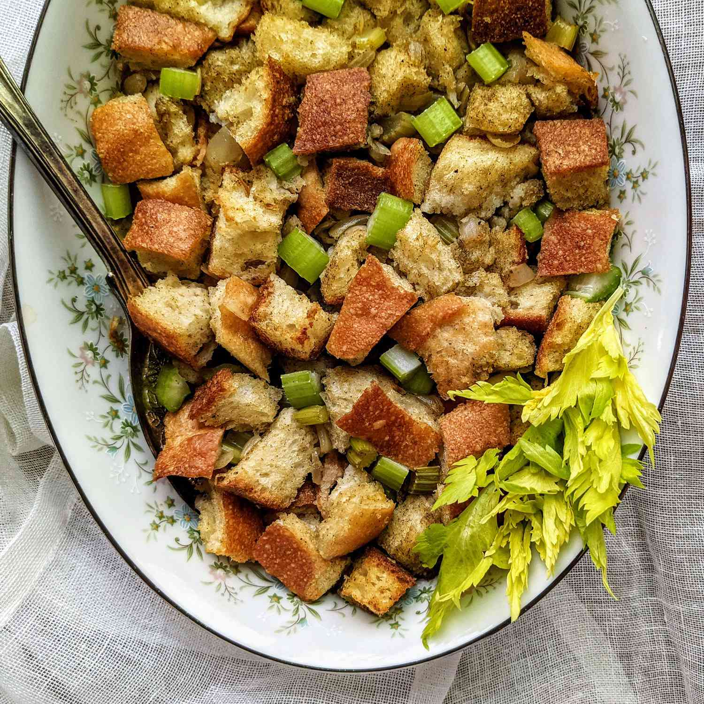

Bread and Celery Stuffing

Description
A simple and easy celery, onion, and bread dressing or stuffing recipe. Ideal for a 10- to 12-pound turkey.
Ingredients
- 1 (1 pound) loaf sliced white bread
- ¾ cup butter
- 1 onion, chopped
- 4 stalks celery, chopped
- 2 teaspoons poultry seasoning
- salt and pepper to taste
- 1 cup chicken broth
Steps
- Let bread slices air dry for 1 to 2 hours, then cut into cubes.
- Melt butter in a Dutch oven or large saucepan over medium heat. Add onion and celery and cook until soft. Season with poultry seasoning, salt, and pepper. Stir in bread cubes until evenly coated. Moisten with chicken broth; mix well.
- Chill, and use as stuffing for turkey, or bake in a buttered casserole dish at 350 degrees F (175 degrees C) for 30 to 40 minutes.
Home